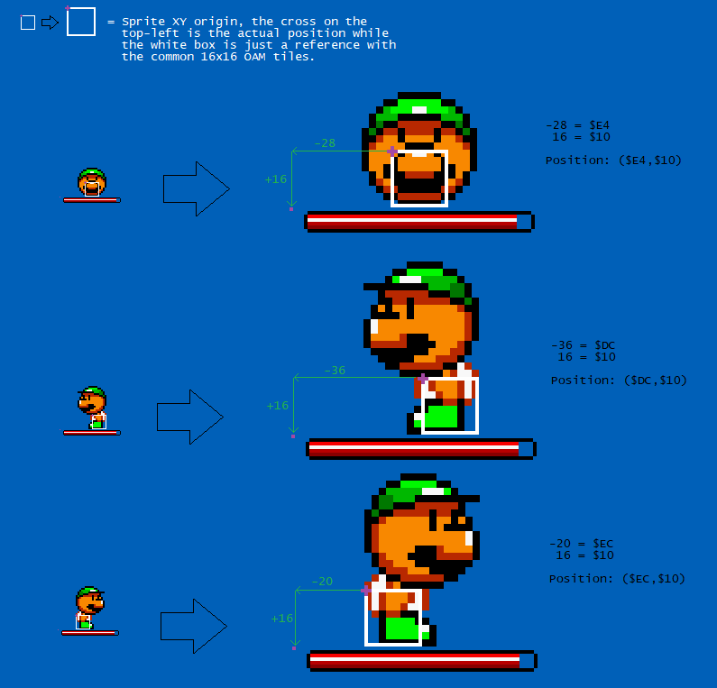
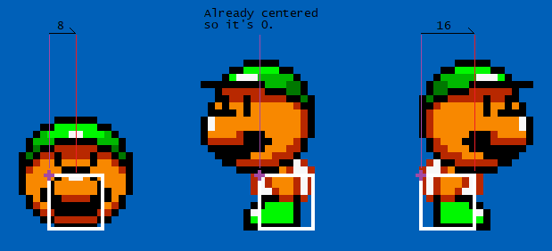
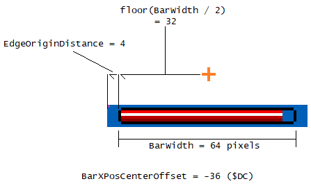
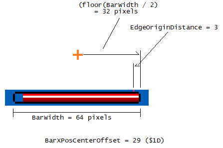

- Trial and error. If the bar is too far to the right, pick a smaller number, if too far to the left, pick a larger number.
- Locking its XY position ($E4/$14E0 $D8/$14D4) at a specified value every frame using uberasm tool's level main:
And arranged the blocks to mark its position.;Note, it does this within a screen boundary, for the sake of simplicity! ;Run this in main (every frame), not init! LDX #!sprite_slots-1 - LDA #$xx : STA !E4 LDA #$yy : STA !D8 DEX BPL - RTL ;xx and yy are the level coordinates (low byte). Use LM's coordinate display at the bottom-left corner, multiply by $10 (or 16 in decimal) to convert from 16x16 blocks to pixel coordinates.
- Setting the bar's XY position to (0,0) (no displacement), make sure this is drawn first before drawing the koopa's body, else the bar can get covered and may not be visible. The top-left pixel of the 8x8 tile that the fill starts at will point to where the origin point of the sprite.
NOTE: despite uberasm tool will lock its XY position, the sprite's movement (routine $01802A) code may displace it's position afterwards by a few pixels (such as gravity making the sprite 1 pixel lower).
As an example, after discovering its XY origin position of the GMK boss, I show off this image of where it is: The purple cross represents the boss's origin position, while the white box is just a reference with the common 16x16 tiles:

The purple dot on the top-left of the bar is just to show the bar's origin position.
Another, easier method of solving the X position, without trial-and-error, is using math to locate a point of where the origin of the bar should be using this formula:
BarXPosition = GetToCenterOfSprite + BarXPosCenterOffset
Simple JavaScript calculator provided
Note: Signed means a variable can be negative, indicating a leftwards displacement. Another important information is that tile displacement from the sprite's origin ranges from -128 to 127 on both the X and Y axis, due to GetDrawInfo only outputs the XY position using an 8-bit signed value.
Where:
-
GetToCenterOfSprite: (signed) A displacement from the sprite's origin point to the actual center of the sprite's body:

To find the center point X position of the sprite:- Take a screenshot using the emulator and make sure the image is 1:1 scale with absolutely no resizing. The resolution of the screenshot MUST be 256x224.
- Open the image that the emulator took the screenshot using an image editor of your choice (such as paint or gimp),
(I recommend zooming in and enabling pixel grid display) and select the image of the boss itself, making sure you make the minimum bounding box with that selection:
Now look at the info at the status bar of the program (usually at the bottom of the window). It should show the statistics, and we want to know the width. In this example, the width of the sprite is 32 pixels. The good news is that since the majority of sprites are usually 8, 16, 32 or rarely 64 pixels wide, thus it is very easy by guessing. - Take the width of that bounding box, and divide by 2. This is the amount of pixels from either the left or right edge of the box, to get to the center. In this example, it is 32 / 2 = 16.
- And now you have located the center X position of the sprite.
- Facing left: 0
- Facing right: 16
- In its shell: 8
- BarXPosCenterOffset: (signed) an offset from its center point (represented as an orange cross) to the bar's origin point. This differs depending on the direction of the bar:
Where:Direction Formula Example Rightwards (left to right) BarXPosCenterOffset = 0 - (floor(BarWidth / 2)) - EdgeOriginDistance  Leftwards (right to left) BarXPosCenterOffset = 0 + (floor(BarWidth / 2)) - EdgeOriginDistance  - floor(x) is a function that rounds a number that is between 2 closest integers to the highest integer less than or equal to x.
- BarWidth means the width of the bar, in pixels. Note: we don't necessarily count the 8x8 bounding box, the bar itself:
This does matter if you have left end and right end both nonzero and also not having the same number of pieces. - EdgeOriginDistance is the horizontal distance between the origin position (top-left pixel of the 8x8 tile where the fill starts when increasing)
of the bar (the purple dot/pixel) and the edge of the bar: